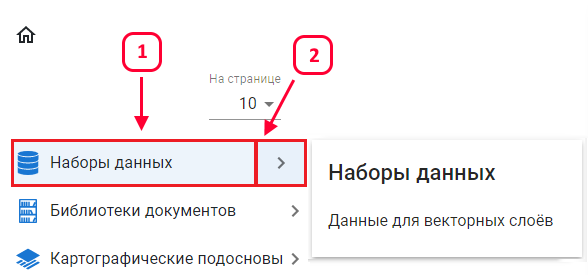
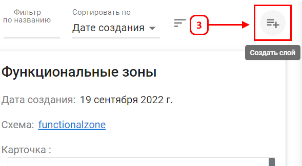
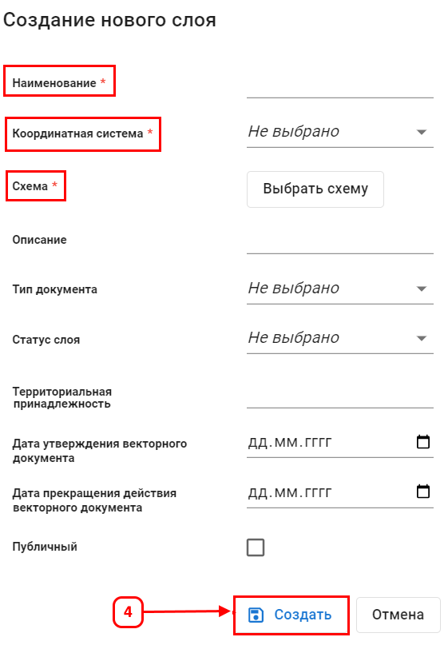

Создание нового слоя
Данная функция позволяет создать пустой векторный слой в наборе данных согласно указанной схемы.
Чтобы создать пустой слой, необходимо перейти в набор данных в котором вы являетесь владельцем или редактором.

Кнопка создания слоя (3)

В открывшемся окне создания слоя необходимо заполнить обязательные поля

После заполнения всех атрибутов слоя его можно создать (4)
Создан пустой слой по шаблону:
Вы как владелец слоя можете выдавать на него разрешения
Слой можно разместить в проекте и вносить данные с атрибутами